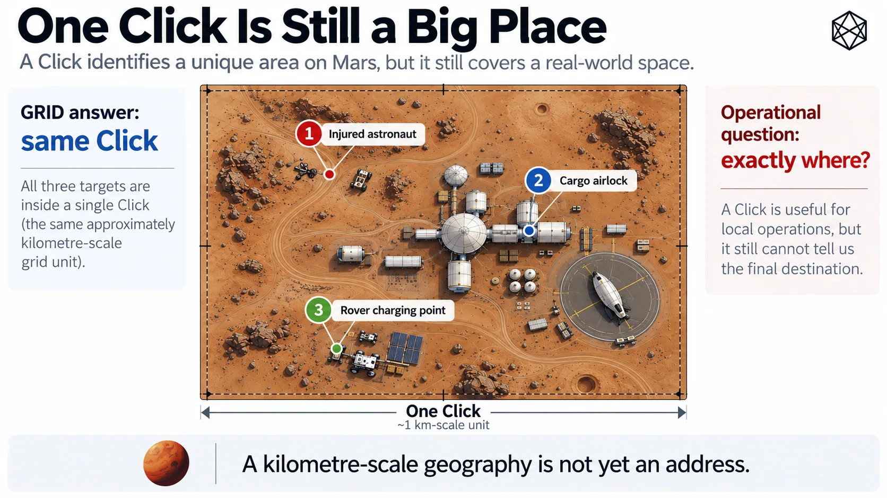

A Kilometre Is Not an Address
The Last-Mile Location Problem
Imagine an astronaut is working outside a settlement when something goes wrong.
Their suit reports the emergency automatically. Operations knows the approximate route they were taking, which team is closest and which part of the settlement should respond. The location resolves cleanly through GRID: Quad, Zand, Province, Sector, Tile and finally Click.
The system has successfully reduced an entire planet to the correct kilometre.
The astronaut is still somewhere inside it.
For regional geography, that is an excellent result. For a person losing pressure, it is an inconvenient amount of Mars.
Read a description of this illustration
The Mars BAR mark used in the book’s BAR section: an orange angular monogram above the words MARS BAR in white on black.
When an area stops being enough

Read a description of this illustration
A Click distinguishes a local area from others within a broad hierarchy, but it is still too large to tell an emergency responder which few metres contain the person or vehicle of interest.
A Click feels small when the alternative is a planet with almost 145 million square kilometres of surface. It feels rather larger when you are looking for one person.
On undeveloped terrain, a kilometre-scale area can contain ridges, shallow craters, equipment, rover tracks and a heroic quantity of visually similar dust. Inside a mature settlement, the same area might contain habitats, roads, power systems, storage yards, loading points, construction sites, parked vehicles and several different entrances to the same large building.
Knowing the correct Click is useful in all of these cases, but it is not the same as knowing the destination. A cargo vehicle can reach the Click containing a receiving facility and still arrive at the personnel entrance rather than the freight lock. A rover can return to the Click containing its charging infrastructure and still have several hundred metres left to travel. An engineer can report failed equipment accurately enough for the maintenance system to know the site, while leaving the technician to search the site when they arrive.
The underlying problem is not peculiar to emergencies. It appears whenever the distinction between somewhere around here and this exact place becomes operationally important.
GRID cannot make that distinction because GRID was never intended to. Its hierarchy answers a series of area questions: which continental-scale part of Mars, which regional block, which settlement-scale area, which kilometre of ground? Each level provides useful geographic context, and Click is approximately where that particular logic reaches its natural end.
Below that point, the question changes. We are no longer principally asking which area of Mars contains this activity? We are increasingly asking which few metres are the destination?
That is a different job.
Precision already exists
It would be easy at this point to claim that Mars needs a new addressing system because latitude and longitude are too imprecise.
That would be nonsense.
Coordinates can describe position on Mars far more precisely than anything this book needs from a civil address. A sufficiently specified coordinate can identify a point to metres, centimetres or finer scales, subject to the quality of the underlying reference frame and measurement. Navigation, surveying, science and robotics already depend on that kind of precision.
Nothing in Matlas improves the laws of geometry. The missing property is not precision; it is addressable identity.
A coordinate describes position. An address gives different people and systems a stable way to refer to the same destination. That distinction matters because operational locations have lives of their own: a receiving lock may appear in logistics software, safety documentation, maintenance records and emergency procedures; a remote instrument may be visited repeatedly over many years; a temporary landing site, pipeline junction or emergency cache may need to be shared among organisations that do not use the same software.
All of them could store coordinates, and sometimes they should. But a common operating geography has another useful job: provide a persistent identity that can sit alongside the measurement.
The difference is familiar on Earth. The coordinates of your house may be more mathematically precise than its street address, but most organisations do not identify the house by asking you to recite latitude and longitude. The address supplies a common reference that different systems can carry while more precise positioning remains available underneath.
Mars needs the same distinction, particularly because much of Mars will not have streets.
Most of Mars will not have a street address
Local addressing will eventually be excellent in the places where people build it. A settlement can name streets, habitats, levels, airlocks and districts in ways that suit the place itself. A mine can develop its own underground location system. A large industrial site can number bays and access points.
These systems will often be more convenient in daily life than a planet-wide technical address, just as 14 Copernicus Lane would usually be a better answer to a dinner invitation than anything encoded in forty-four bits.
The difficulty is that a universal location layer cannot begin by assuming a city already exists. A damaged rover 170 kilometres from the nearest settlement has no street. Neither does a scientific instrument on open terrain, a temporary cargo drop, a future construction site or a point selected during an emergency because that happens to be where the casualty fell.
Those locations can be measured. They may even acquire names later. What they lack at the moment they are needed is a shared address that comes from the geography itself rather than from development around it.
That requirement becomes more important, not less, during settlement. Exploration can often tolerate specialist coordinates because specialist teams are involved. A civilisation creates far more occasions when ordinary software, institutions and people need to exchange precise locations without first agreeing on a local naming scheme.
The address therefore has to exist before the street does.
Do not keep stretching GRID
There is an obvious way to solve the problem: keep subdividing GRID.
After Click, add another named level, then another, and continue until a branch of the hierarchy identifies only a few square metres. The mathematics would be straightforward, and the resulting address would remain neatly nested inside the structure we already have.
I rejected that approach because it makes GRID worse at being GRID.
The existing hierarchy works because its levels correspond to recognisably different geographic scales. Quad, Zand, Province, Sector, Tile and Click provide progressively narrower context as we move from planetary orientation towards local operating geography. A Click is still an area you can sensibly discuss as a piece of settlement or terrain.
A four-metre patch is different. It is rarely interesting because it constitutes another tier of civil geography; it is interesting because the charger, airlock, casualty or instrument is there.
That difference is architectural rather than mathematical. Above Click, hierarchy is doing most of the work: we want to move up and down scales, aggregate information and understand where one area sits inside another. Below Click, the primary requirement is to distinguish a destination precisely and economically.
Adding more civil nouns because subdivision happens to continue would confuse those jobs. GRID would become an indefinitely recursive spatial index rather than the relatively small operating hierarchy it was designed to be.
So GRID should stop — not because a kilometre is the limit of the mathematics, but because it is approximately the limit of the question GRID exists to answer.
A second layer can then take over.
The new layer must inherit the old one
Starting a new layer does not mean starting a new geography.
If GRID says a Click contains one particular piece of Mars, the fine-address system must inherit exactly that piece. There cannot be a narrow strip along one boundary that belongs to a Click but to no fine address, or a sliver claimed by two neighbouring addresses because the systems drew their edges independently.
Every fine location must belong to one and only one Click. That requirement matters for more than geometric tidiness: a precise location should be able to roll back up through the hierarchy whenever broader context is useful. An emergency Cell should still belong to a particular Click, Tile, Sector, Province, Zand and Quad. A logistics destination should still sit inside the same regional geography used for planning.
The two layers should therefore meet without translation.
This is particularly important at high latitude. Regular GRID Clicks are simple angular rectangles, but P1 adapts longitude subdivision beyond 72° as meridians converge. A fine-address architecture that quietly assumes every parent Click is the easy rectangular case would stop being a Mars-wide system precisely where the geometry becomes interesting.
The correct relationship is simpler: GRID determines the Click, whatever valid geometry that Click has, and the fine layer subdivides the Click it is given.
The difficult planetary geometry remains solved once, at the level where the difficulty first appears.
Exact does not mean infinitely precise
The next question is scale.
Once we decide to subdivide below the kilometre, there is a temptation to keep going until the address becomes spectacularly precise. If metres are useful, surely centimetres are better. If centimetres are better, somebody will eventually suggest millimetres, at which point our civil addressing system has started applying for work as a docking controller.
That is another case where more precision does not necessarily mean better architecture.
A universal address needs to get a person or machine close enough that the intended destination has effectively been reached. A rover approaching a charging connector can use cameras, ranging sensors and local control for final alignment. A cargo vehicle can use site guidance at the receiving lock. A rescue team can use suit telemetry, vision or ordinary eyesight once it reaches the casualty.
Those specialist systems should remain specialist. For the common layer, a few metres is a more useful target: small enough to distinguish nearby entrances, equipment, loading positions and emergency locations, while remaining large enough to behave like an address rather than a substitute for precision navigation.
There is also something operationally sensible about addressing a small patch rather than pretending every real destination is an infinitely small mathematical point. An airlock has width. A charging pad occupies ground. A person and their equipment take up space.
Two sensors can therefore disagree slightly about the ideal representative coordinate while still agreeing that they are referring to the same civil location.
The address gets you there. Local positioning finishes the job.
It must work when the network does not
A universal Mars address also cannot mean the key used to query somebody else's database.
Online services will be useful. A mapping application should resolve addresses, display them and route people towards them. Logistics platforms will exchange them through APIs. Settlements will cache them, search them and wrap them in interfaces far friendlier than anything described in a technical protocol.
None of those services should create the meaning of the address.
A rover carrying a valid address ought to be able to determine where that address refers if the settlement network is unavailable. A remote science station should not need a commercial service to interpret a location already written into its own maintenance record. An emergency system should not turn a temporary communications outage into a philosophical debate about where the casualty has gone.
Mars is an unusually poor place to make continuous connection to the address company part of the definition of location. The fine layer therefore has to be offline-decodable.
Give a conforming system the protocol, the relevant reference definitions and the address itself, and the destination should remain recoverable without asking a central authority for permission or interpretation.
That turns the address from a service into infrastructure.
One machine answer, many human interfaces
There is one more separation to make before designing the mechanism: machines and people do not need the same representation.
A computer is perfectly content with a compact binary identity. It does not care whether that identity is memorable, pronounceable or attractive on a road sign. A person trying to repeat a location over a noisy radio has very different priorities and is unlikely to regard a dense machine code as evidence of thoughtful interface design.
Trying to force one representation to satisfy both groups would compromise each. The fine-address layer should therefore have one canonical machine identity underneath it, while human interfaces render that identity in more convenient forms without altering the location itself.
This matters because interfaces should be allowed to evolve faster than geography. A future settlement may display a local building name. An English speaker may use a three-word representation. Another language may use a completely different set of words. Emergency software may prefer a phonetic interface of its own.
None of those choices should change the few metres of Mars being referenced.
The place comes first. How people say it comes later.
The design brief
We can now specify the problem without prematurely specifying the solution.
The new layer must begin inside every GRID Click and reach the few-metre scale. It must partition the parent completely, preserve deterministic boundary ownership and work through both Regular GRID and P1 without creating a separate polar addressing system.
Every resulting location must have one canonical machine identity. Given the identity and the appropriate protocol, a conforming implementation must be able to recover the location; given a location, independent implementations must be able to derive the same identity.
It must remain exactly connected to GRID while being usable without a central registry or continuous network connection. It must stop before civil addressing turns into surveying or robotic control, and it must leave room for a human-facing interface without making human language part of the canonical geography.
That is a fairly demanding brief, but it is now a narrow one.
We are no longer designing another map of Mars. GRID has already done that work.
We are designing the last few metres.
Bar
The resulting system is the Mars B.A.R. Code — Binary Address Reference Code.
From here on, I will call it simply Bar.
The name describes its job rather well. Bar is an address reference layer, with a deterministic machine identity underneath whatever interface a person eventually sees. It begins where GRID deliberately stops and carries location from the kilometre scale down to a few metres.
It does not replace coordinates. It does not extend the civil hierarchy indefinitely. It does not name places, navigate the final centimetres or require every settlement to abandon its local addresses.
It answers one narrower question:
Exactly where?